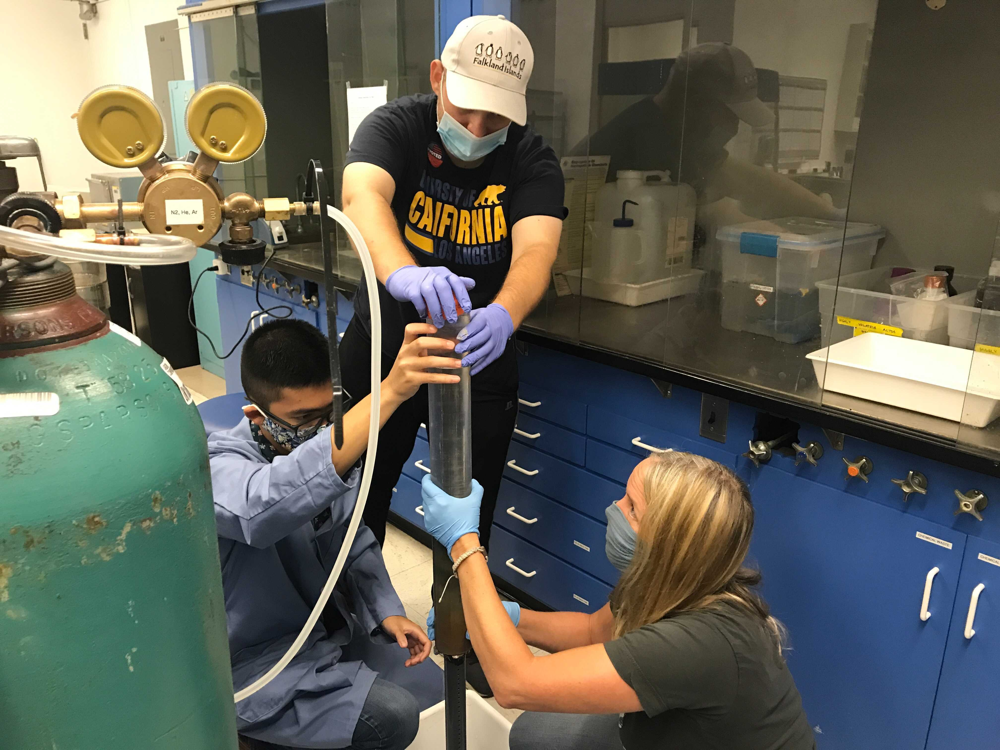
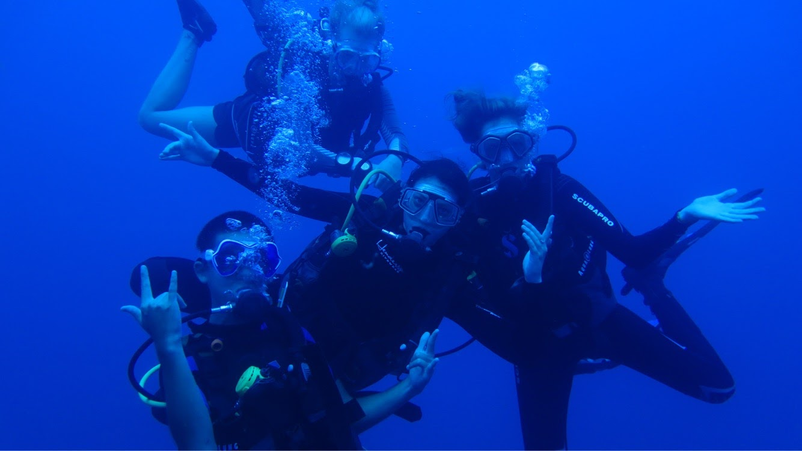
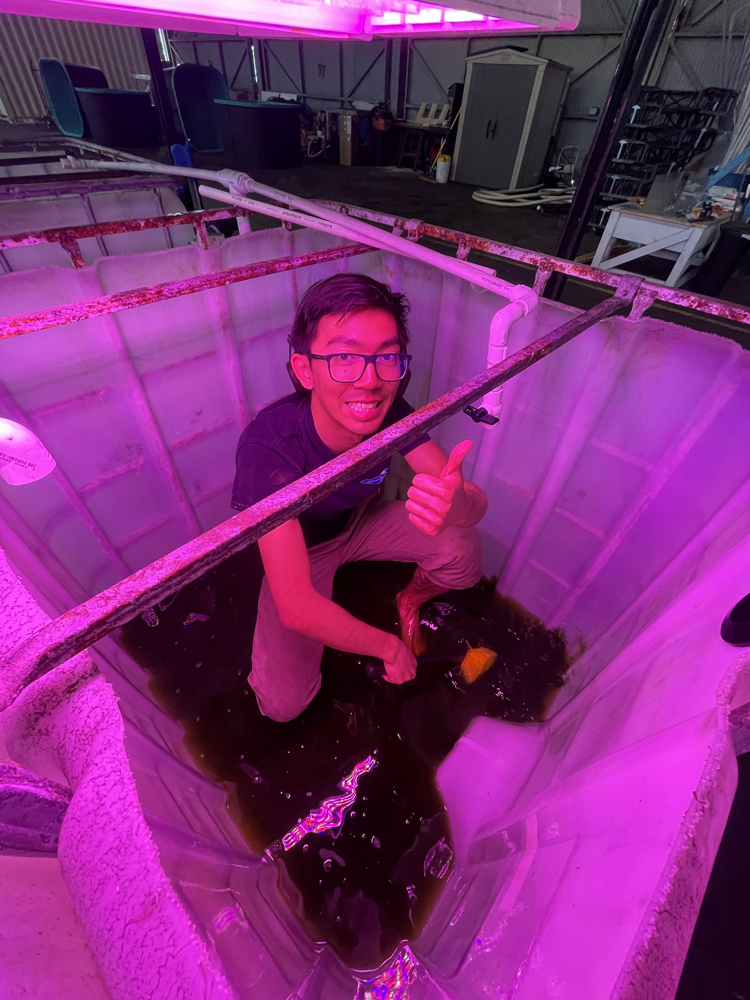
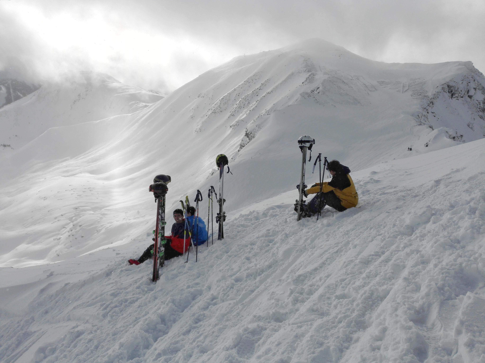
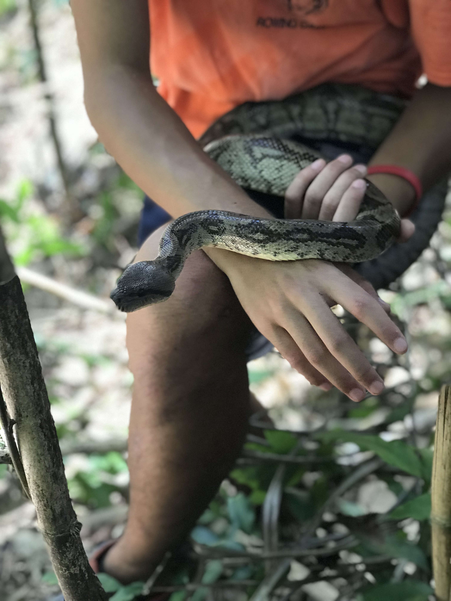
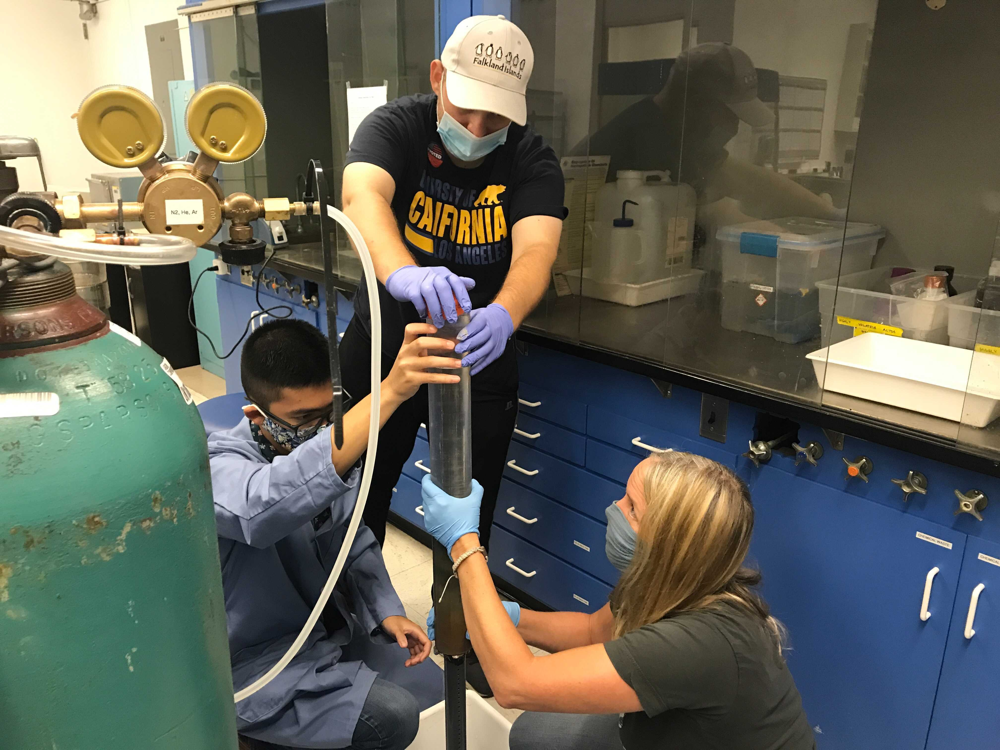
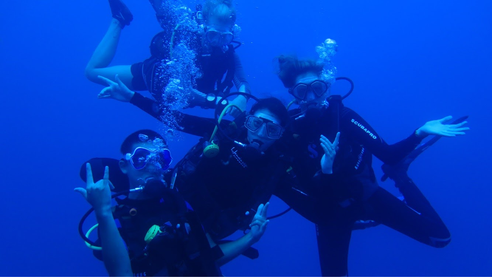
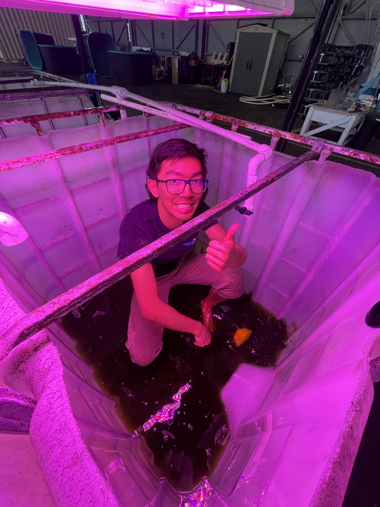
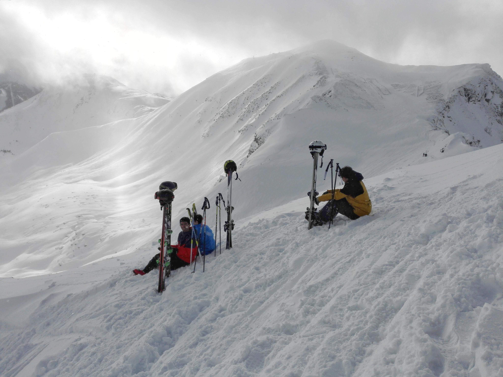
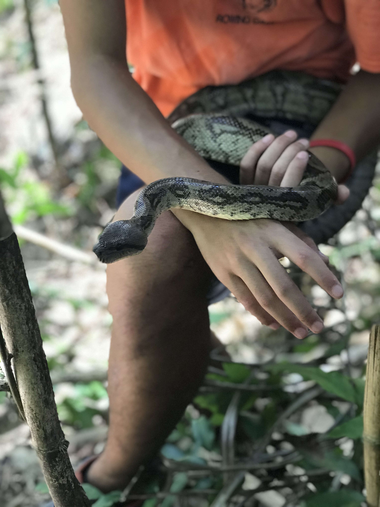
About Me
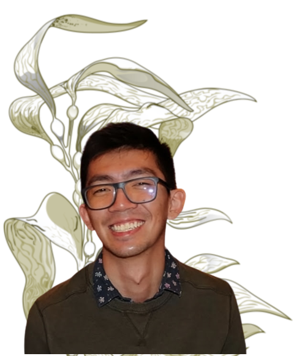Hi! My name's Marcus and I'm a biologist/geochemist that really likes seaweed (peep the background)!
I've done research in a number of different environments working on a number of different species. From the secondary forests in Madagascar; the Central Pacific Ocean in French Polynesia; the Western Pacific in California; to (hopefully!) the Atlantic in the Eastern Canadian Arctic, I've worked on herpetofauna (reptiles/amphibians); lepidopterans (butterflies/moths); stony corals; estuarine fish; and most importantly— macroalgae!
I graduated from the University of California, Los Angeles in 2022 with a B.Sc. in Ecology, Evolution, & Behavior and will be pursuing a M.Sc. in Earth & Planetary Sciences at McGill University. I'm currently co-advised by Dr. Nagissa Mahmoudi and Dr. Rowan Barrett. Feel free to check out my CV down below for my actual work and research experience!
Aside from science (or science-adjacent things), I am a huge skier; am an amateur web developer (I built this from scratch! - I'm too cheap to pay squarespace), was a barback (baby bartender), have (intensely) dabbled as an aquarist/aquaculturist, and love teaching others about marine science! I'm very much a jack of all trades, master of none and am always looking for opportunities to flex my non-science muscles once in a while. Reach out if you'd ever like to chat!
Research
Still figuring it out (for the M.Sc. at least)! I've worked on nitrogen geochemical cycling in marine environments, coastal geomorphology in California, and some proteomics analyses. More details below in the CV!
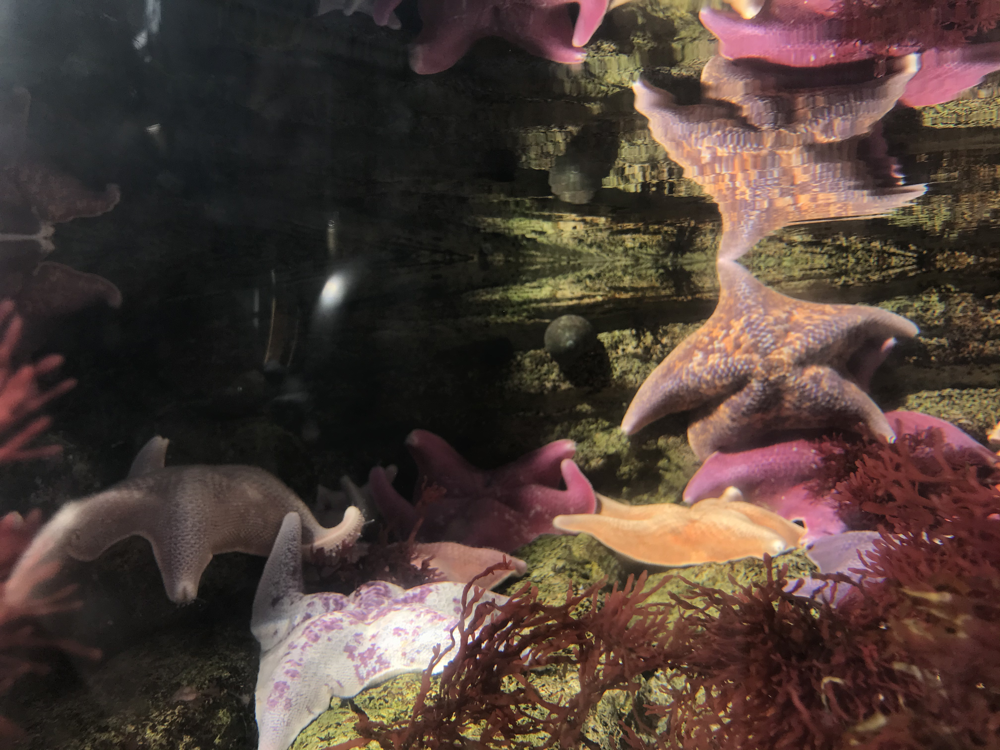 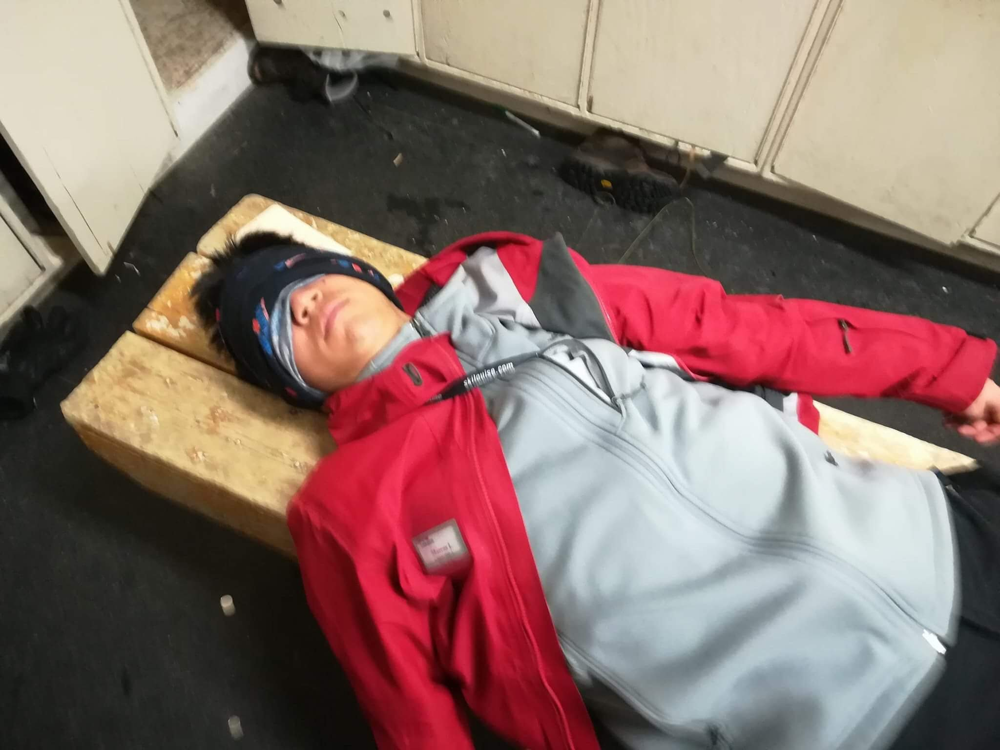 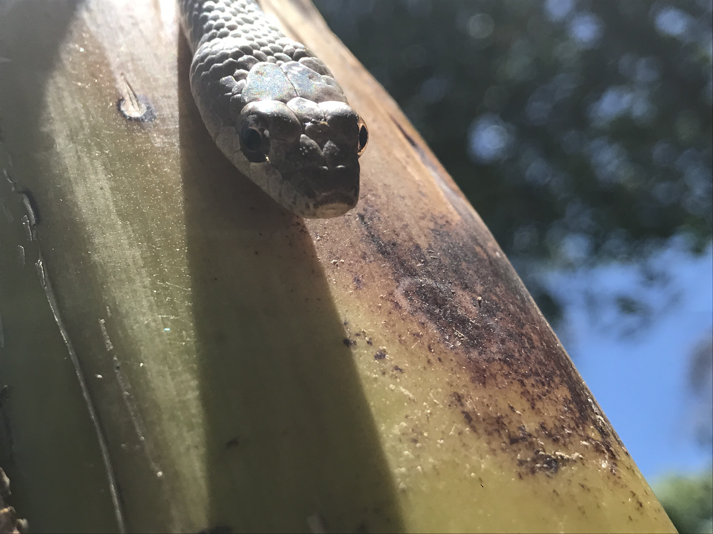 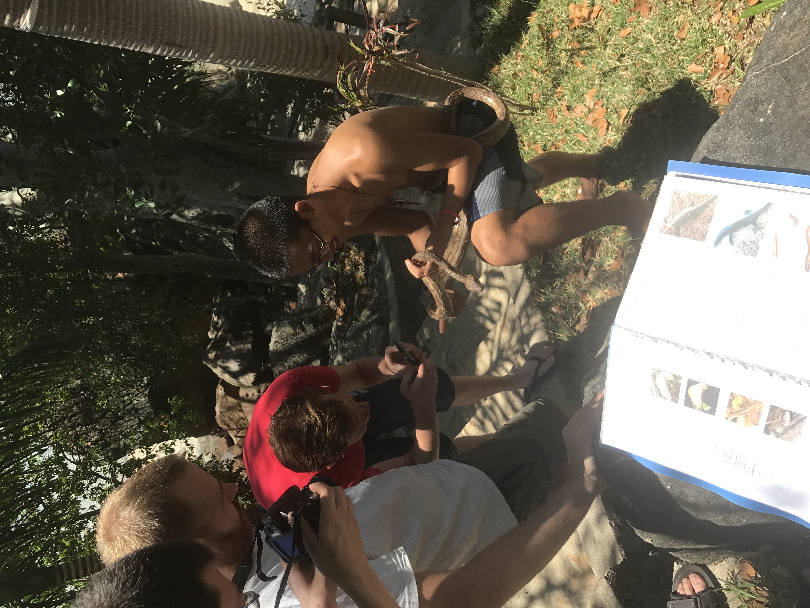
Publications
*indicates co-first authorship
Barbee, B.E.*, Lin, M.K.R.*, Min, I.A.*, Takenami, A.M.*, Philson, C.S. and Blumstein, D.T. (2022), Nutrient enrichment alters risk assessment in Giant clams. J Zool. https://doi.org/10.1111/jzo.13030
Curriculum Vitae
Work & Research Experience
FUTURE
McGill University (M.Sc.)
Nagissa Mahmoudi & Rowan Barrett Lab
Will be figuring out what I'm doing soon...
NOW - JUL 2022
University of Southern California
Sergey Nuzhdin Lab - Lab Manager
With Dr. Sergey Nuzhdin, I acted as the lab manager for both his molecular biology lab and off-campus aquaculture facility. I was responsible for general lab maintenance, inventory, and safety while maintaining kelp-specific projects. During my time, I managed one of the first germplasm collections ("seed bank") for Macrocystis pyrifera in Southern California; temporarily managed the kelp elevator project investigating experimental cycling giant kelp from nutrient-rich deep water to photic surface as an offshore farm proof of concept; and worked on selectively breeding then growing out sporeless (non-reproductive) cultivars of giant kelp on-land. With our aquaculture facility housed at AltaSea, I participated in education programs (85+ students) and interviews on our work while mentoring four paid undergraduate researchers (who are all super sick!).
JUN 2022 - SEP 2018
University of California, Los Angeles (B.Sc.)
Tina Treude Oceanography Lab - Research Assistant
In Dr. Tina Treude's lab, I worked primarily with David Yousavich, Ph.D.(c), and helped study the fate of nitrate and sulfur compounds in the Salton Sea, an anoxic lake, while acting as a technician. I performed sequential nitrate/nitrite determination (and helped developed a method for doing so in small quantities and at low detection limits), phosphate, alkalinity, radiolabeled sulfate reduction measurements. I also partook in several field sampling trips and boat trips to collect cores, later preparing them in lab.
David K. Jacobs Lab - Undergraduate Researcher
For several years, I worked with Dr. David Jacobs on a number of different projects— primarily on coastal geomorphology and some geochemistry. I classified geomorphological processes and features of coastal estuaries, lagoons, and watersheds in California from aerial imagery and digital elevation models. This work was then translated over to understanding the geohydrology of rainwater in malibu, CA. Lastly, I worked on a collaborative project between Dr. Jacobs and Dr. Kevin Mckeegan on exploring Secondary Ion Mass Spectrometry (SIMS) on fish otoliths as environmental geochemical markers of lagoon conditions through time.
Dashew Center for International Students & Scholars
I started working for the Dashew Center my freshman year of college doing events and programming geared towards international students. I coordinated the Language Exchange and International Ambassador programs while taking point on other events such as our international talent showcase and Thanksgiving food drive. Working with our supervisor, we were each responsible for budgeting, staffing, and marketing of our respective assignments, with over hundreds of participants in some programs.
Field Marine Biology Quarter
As part of my coursework, I partook in a field research class with Dr. Dan Blumstein and Dr. Peggy Fong in Mo'orea, French Polynesia. With Dan, we investigated the changes in antipredatory behavior in photosynthetic giant clams (Tridactna maximus) under nutrient enrichment. With Peggy, we began work on applying trait-based ecologicalclassification to marine macroalgae, specifically with Turbinaria ornata, Sargassum pacificum, and Padina boryana.
Ocean Resources for Conservation and Advocacy (ORCA) - Founder/Chair
To foster community in the marine sciences during the pandemic, I, along with eleven friends, started ORCA to help both marine scientists and non-scientists learn about ocean conservation and justice. Our primary work was increasing the accessibility of ocean sciences through community lead events. Personally, my favorite event was the Biden 100 Days event, where I placed the ownership of the panel into the hands of student experts. We tracked the movements from Biden's administration in his first 100 days, during which I built a ten-week curriculum on policy making, historical trends in infrastructure, and understanding legal jargon to prepare our student speakers to act as experts. This work was important to many of us as it was the first presidential election we had partaken in.
Jeana Drake - Research Assistant
Working with my long-time mentor, I assisted Dr. Drake on performing basic local alignment (BLAST) of whole-proteome data from the stony coral species Stylophora pistillata. I also performed the gene ontology (GO) enrichment and KEGG mapping analyses. This dataset was exploring the upregulation and downregulation of biomineralizing and toxin proteins across different larval stages.
Sustainable LA Grand Challenges - Research Scholar
I worked on a project sponsored by California Parks and Recreation to study spatial and temporal distribution of crow behavior in Venice Beach, CA from anthropogenic activity. The crows were disrupting the local endangered California least tern reserve nearby and we used our data in an education campaign informing residents on how to adjust their garbage disposal habits.
OCT 2021 - AUG 2019
California Science Center
Living Collections Aquatic Husbandry Volunteer
About once a week, I would volunteer as an aquarist (aquatic husbandry specialist) in taking care of the touch tank exhibit (sea urchins, abalones, sea stars), wet tables (crabs, shrimps, lobster - singular, perches, octopus), moon jelly exhibit, and coral fragments. I not only prepped food and fed our critters but also cleaned tanks and performed maintenance, racking up over 350 hours. This is where a lot of my aquaculture/aquarium-keeping knowledge comes from!
SEP 2021 - JUN 2021
Boston College
Wang Stable Isotope Biogeochemistry Lab - Summer Researcher
Over a summer, I worked with Dr. Xingchen (Tony) Wang to analyze nitrogen, carbon, and oxygen isotopes in seawater samples and coral tissue samples. Through the seawater samples, we could estimate how much of the nitrogen observed was anthropogenic runoff versus natural sources. In the stony corals, we were exploring if there was an increase in heavier nitrogen isotopes in aposymbiotic (non-photosynthesizing) corals as photosynthetic corals would internally cycle their nitrogen. I also acted as the on-site technician for the lab's isotope ratio mass spectrometer (IRMS) with a modified Gas Bench (for N2O analyses) and Elemental Analyzer (EA).
SEP 2019 - APR 2019
California Reef Check
EMBARC Teacher
Partnering with a local whale watching company, we would take local middle and high schoolers out to the open ocean to learn about marine science (and occassionally find dolphins and whales!). I taught lessons on physical oceanography and elasmobranchs while assisting in live specimen collections of sea stars, nudibranchs, mussels, and kelp used in the marine invertebrate lesson.
MAY 2018 - NOV 2017
Lake Louise Ski Resort
Ski Instructor
I was a CSIA Level 2 ski instructor and had a specialization in children education. I worked with young children and young adults looking to shred!
NOV 2017 - JUN 2017
Madagascar Research and Conservation Institute
Forestry Program Intern and Manager
On a small island called Nosy Komba, I helped manage, then subsequently took over management, a group of 20-30 volunteers in the forest conservation program. I surveyed the biodiversity of the island's secondary forests, helped develop an agroforestry program, collected geospatial data on our sites, and trained volunteers/locals on our monitoring protocols. Included were black lemurs, herpetofauna, lepidoptera, and birds.
Skills & Such
Languages
- Chinese - Mandarin
- Chinese - Cantonese
- French
Computer Things
- Programming
- R
- C++
- HTML/CSS/Javascript
- Python
- Geospatial Information Systems (GIS)
- QGIS
- ArcGIS (with Spatial Analyst Toolkit)
Random Skills & Certs
- Diving
- PADI Rescue Diver
- Basic First Aid/O2
- Canadian Ski Instructors Alliance (CSIA) Level 2
- with Teaching Kids Spealization
Contact
I won't bite, I promise!
Email: marcuslin@g.ucla.edu